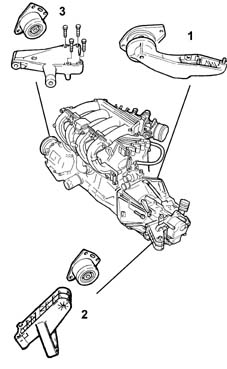
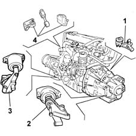

Introduction - POWER UNIT SUPPORTS
- Path
- Descriptions > 10 ENGINE UNIT > 1008 POWER UNIT SUPPORTS > Introduction - POWER UNIT SUPPORTS
- Kind
- system description
- Applies to
- all engines; all production periods
- Interactive page
- https://sloeber94.github.io/elrnDB-fMltpl/en/#/2892417
Applies to: engines: 1.6 16v; all production periods
The power unit mountings provide the structural connection between the power unit and the bodyshell.
They are rated to support the weight of the power unit and withstand the loads resulting from the torque transmitted by the engine.
Each mounting comprises a rubber-metal block which dampens the vibrations generated by the engine, largely reducing those transmitted to the bodyshell.

1, Rear mounting 2, Gearbox side mounting 3, Timing gear side mounting
Applies to: engines: 1.9 JTD 8V; all production periods
The power unit mountings provide the structural connection between the power unit and the bodyshell.
They are rated to support the weight of the power unit and withstand the loads resulting from the torque transmitted by the engine.
Each mounting comprises a rubber-metal block which dampens the vibrations generated by the engine, largely reducing those transmitted to the bodyshell.

1, Rear mounting 2, Gearbox side mounting 3, Timing gear side mounting 4, Reaction rod